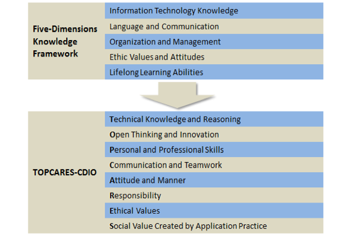
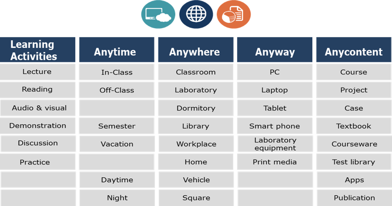
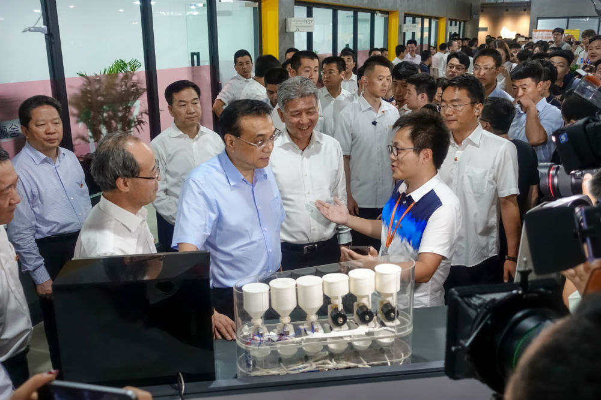

Dalian Neusoft University of Information
CDIO’s progress in DNUI
Back to 2001, Dalian Neusoft University of Information (DNUI) formulated and implemented an engineering education reform named ‘Five-Dimensions Knowledge Framework’ that divided learning outcomes into five high-level categories. The underlying aims of this framework are in line with CDIO. That is to identify the knowledge, skills, and attitudes that engineering students should possess as they leave the university, and how proficient they should be. Thus it had paved the way for DNUI’s application of CDIO approach to its education reform in 2008.
DNUI’s engineering education reform: from Five-Dimensions Knowledge Framework to TOPCARES-CDIO
With CDIO knowledge framework and further research into the industry, companies and stakeholders, DNUI issued TOPCARES-CDIO competence goals system in 2008, which inherited and innovated the CDIO framework, and then constructed its own competence goals system. TOPCARES-CDIO is a comprehensive and systematic reform directed by CDIO philosophy in teaching and learning. It was first implemented to engineering programs and then to all DNUI’s undergraduate programs including business, language and art programs.
TOPCARES-CDIO’s refining and instancing in CDIO
The TOPCARES-CDIO competence goals system is composed of 8 first-level goals, 34 second-level goals and 126 third-level goals. ‘TOPCARES’ is the acronym of the eight first-level competence goals. It also stands for the supreme affection and responsibility education bears to students: by promoting students’ comprehensive development in knowledge, skills and attitudes synergistically, TOPCARES-CDIO system enables universities to help students creating their own values, so they can further create social values with application practices. The system, as shown in Figure 4, combined with international accreditation agreements’ requirements (Washington Accords, Sydney Accords, and Dublin Accords), and industry expectation for talents, are then reflected in the learning objectives of different programs. Hence the graduate attributes and related competence goals of different programs can be listed explicitly.
DNUI’s blueprint of innovative engineering talent nurturing system adopted CDIO approach
TOPCARES-CDIO integrates professional education, all-around development education, and innovative and entrepreneurial education into talent nurturing plans. Its integrated curriculum is outcome-based, pulled by a five-level projects system, and dynamically updated with industry progress. DNUI set up Student Office and Venture Office (SOVO) in 2002, a department offering entrepreneurial training, service, capital, network and culture, to improve its graduates’ innovative and entrepreneurial attributes as well as its ability to incubate start-ups.
DNUI’s innovation and entrepreneurial education platform: SOVO (Student Office & Venture Office)
DNUI’s “4A” Flexible Learning Environment and up-to-date engineering resources environment enable students to learn Anytime, Anywhere, by Anyway and with Any-content.
“4A” Flexible Learning Environment Base on Cloud Platform
At DNUI, we encourage lecturers to acquire practical experience in their professions. Around 60% of faculty have dual-qualifications, dual-income, and dual-positions from both university and industry, and are capable of bilingual teaching.
Dual qualified, dual income, dual positions, bilingual teaching faculty in DNUI
We also build an all-around quality assurance system that helps us ensuring the quality of every aspect of student learning experience.
DNUI’s quality assurance system
At present, TOPCARES-CDIO, with wide recognition, has received much concern at home and abroad. With its continuous progress, DNUI students are able to apply what they’ve learnt, let their wisdom inspired and creativity sparkle, become the backbone of the industry, and contribute to the society.
Premier Li Keqiang visited DNUI and talked with student entrepreneurs in SOVO, 28th June 2017
DNUI students won the First Prize in the 7th Computer Application Ability and Information Literacy Contest, 22th May 2017
DNUI students won the international silver award in the 21st Japanese Rugby Robot Contest, 16th to 18th December 2016-1
With a new round of industry revolution taking place worldwide, our domestic manufacturing sector will gradually be reshaped and upgraded. Future industry requires talents that are innovative, globally competent, socially responsible, and most importantly, can Conceive-Design-Implement and Operate complex real-world engineering problems. And it is DNUI’s mission to prepare students for this future. We believe that with our efforts and devotion, we will fulfill this mission, and become a leading university which is Characteristic, High-standard, Entrepreneurial and Application-oriented.
Over the years, academics at DNUI have published hundreds of research papers about TOPCARES-CDIO in several conferences and core journals at home and abroad, some of which are as follows:
| Titles | Author | Journal/Meeting Name |
|---|---|---|
| The Exploration of building Integrated Talents Nurturing Model Based on TOPCARES-CDIO | Wen Tao | CHINA HIGHER EDUCATION |
| The Exploration and Practice of Integrated Talents Nurturing Model Based on TOPCARES-CDIO | Wen Tao | Computer Education |
| Deepening Teaching and Learning Reform and Construction an Integrated Model of TOPCARES-CDIO Talent Nurturing | Wen Tao | Proceedings of 7th China - Europe International Symposium on Software Industry - Oriented Education |
| Research and Practice on Accessing Talents Training Program Based on TOPCARES-CDIO | Dong Wei, Wang Shiyong | Research in Higher Education of Engineering |
| Research and Practice of the Assessment to the Students’ Learning Effect Based on TOPCARES-CDIO Strategy for Engineering Education | Wang Shiyong, Liu Long, Dong Wei | Research in Higher Education of Engineering |
| Exploration of TOPCARES-CDIO Cultivation Model for Digital Arts Talents | Yu Qingjun | Engineering Leadership in Innovation and Design |
| UTILIZING CDIO ENGINEERING WORKSPACES TO FACILITATE | Sun Xiaoling, Wen Tao, Guo Quan | Proceedings of the 9th International CDIO |
| DESIGN-IMPLEMENT EXPERIENCES | Conference | |
| Research on Single Chip Computer Teaching Reform under CDIO Engineering Education Mode | Zhang Fuyan, Zheng Chunjun | 2013 International Conference on Education Technology and Information System |
| Talent-training Mode Innovation Analysis of CDIO and Personality Traits | Sun Nan, Qin Long, Yu Dan | 2013 International Conference of Education and Teaching |
| Exploring the Practical Teaching Curriculum System Base on TOPCARES-CDIO | Peng Zhihao, Xiong Yaohua, Chen Minghua, Qiu Jianhua | 2011 3nd International Conference on Information、Electronic and Computer Science |
| E-Business Teaching Reform Based on CDIO Take“Website Planning & Operation”As An Example | Tian Huiyi, Gao Zitang, Cui Yanqing | 2011 2nd International Conference on Artificial Intelligence, Management Science and Electronic Commerce |
| The Practice Base Construction of Engineering Education Based on TOPCARES-CDIO Model | Tang Dejun, Jin Haiyi | 2011 the International Conference on E-Business and E-Government |
| Design and Implement of Practical Teaching System Based on TOPCARES-CDIO | Qiu Jianhua, Xiong Yaohua, Peng Zhihao | 2011 Teaching Seminar on Science and Engineering Course in Higher Education |
| Research on the Application of CDIO Training Model in Engineering Speciality of Ordinary University | Jiang Zhong, Xiong Yaohua | 2011 Teaching Seminar on Science and Engineering Course in Higher Education |
| Research of “Production-study-research” Integrated Talents Nurturing Model Based on TOPCARES-CDIO | Zheng Chunjun | The Conference on Higher Education Development and Teaching Reform |
| Research on Training Mode of Master of Software Engineering Based on | Ma Jun, Zhou Yiqing, Ma Xiaoqin | 2010 Conference on Higher Education Development |
| TOPCARES-CDIO Educational Philosophy | ||
| A CDIO-based Teaching Quality Monitoring System for Computer Science and Technology Specialty at Private Universities | Jin Haiyi, Tang Dejun | 2010 International Conference on E-Health Networking, Digital Ecosystems and Technologies Proceedings |
| Design and Implement of Level-Three Project based on TOPCARES-CDIO Engineering Education | Dong Wei | 2013 International Conference on Education Technology and Information System |
| The Revolution of SOVO Practical Teaching Center based-on TOPCARES-CDIO | Tong Lin | Proceedings of 2010 Third International Conference on Education Technology and Training |